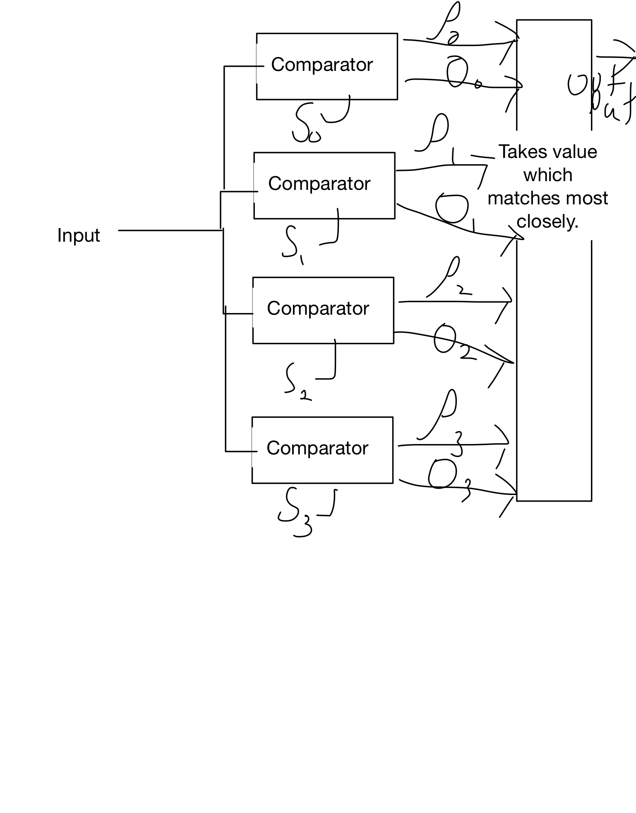

Ditigal Transmitters and Recievers
Table of Contents
1 Lecture 1 - History of Communication
This is mt, I have not a copy of these notes. Mainly discussed how in the last 120 years we/society has gone from using semophores to using modern fast as light coms.
2 Lecture 2 - A cont. of lecture 1
More info I don't have a copy of….
3 Lecture 3
4 Lecture ?
:DATE:
Use correlators to match input to possible transmitted waveforms
5 Lecture ?
5.1 Transmitter

Figure 1: internals of Ditigal reciever with two-bit decode
5.2 Reciever
two bits per symbol - four possible wave forms
| symbol | bits | four possible waveforms |
| 0 | 00 | 00 |
| 1 | 01 | 900 |
| 2 | 10 | 1800 |
| 3 | 11 | 2700 |
5.3 TODO Graham-Schmidt: check matrix algebra book on this topic.
:DEADLINE:
- Signals S1(t),…,Sm(t)
- basis functions φn(t),…,φn(t), N ≠ M
- \(S_i(t) = \sum{n=1}{N}{S_{in} \phi_n(t)}\)
- Si = [Si1 Si2 … Sin]
5.3.1 1st signal
Es1 = \(||S_{1}||^2\)
$φ1 = \(\frac{S_1(t)}{\sqrt{E_{s1}}}\)
\(S_{11} = \sqrt{E_{s1}}\)
5.3.2 2nd – Nth signal
Creating a new basis function
S21 = <S2(t),φ1(t)>
r2(t) = S2(t) - S21 φ1(t) <– orthogonal to φ1(t)
If remainted r_i(t) = 0 skip the steps below
- The part of signal 2 that can't be represented by φ1(t).
Er2 = ||r2(t)||2
φ2(t) = \(\frac{r_2(t)}{\sqrt{E_{r2}}}\)
S22 = \(\sqrt{E_{r2}}\)
- others
Sni = <Sn(t) , φi(t)> for φi(t) which are defined.
ri(t) = Si(t) - ∑{Sin} φn(t)
5.4 Fourier Transfrom
- F {g(t)} = G(f) = \(\int_{-\inf}^{\inf} g(t) e^{-j2\pi ft}\)
- F \(^{-1}\) {G(f)} = g(t) = \(\int_{-\inf}^{\inf} G(f) e^{j2\pi ft}\)
5.4.1 TODO Properties: verify that 2.1 is correct
- Linearity
- F \({a_1 x_1(t) + a_2 x_2(t)}\) = a1 F \({x_1(t)}\) + a2 F \({x_2(t)}\)
- Time Shift
- Frequency Property
- F \(^{-1}{X(f-f_0)} = e^{j2\pi f_0t} \int_{-\inf}^{\inf}{x(t)}\)
6 LEcture ?
:DATE:
6.1 Distortionless System
x(t) \(->\) \box \(->\) y(t)
6.1.1 Acceptable
- Amplification//
$y(t) = K x(t)$//
- Delay
\(y(t) = x(t-t_0)\) , $t0: positive integer, positive required for causality$//
- Overall//
\(y(t) = K x(t-t_0)\)
6.2 Freq representation
\(Y(f) = K e^{-j2\pi ft_0} X(f)\) = \(H(f)X(f)\) Linear time invariant. where \(H(f) = Ke^{-j2\pi ft_0}\)
\(h(t) = K\delta(t-t_0)\)
6.3 Bode rep
\(H(f) = Ke^{-j2\pi ft_0}\)
\(\abs{H(f)} = K <- constant Mag(gain)\)
\(\angle{H(f)} = -2\pi ft_0 <- linear, slope = -2\pi f\)
Group Delay: \(t_g(f) = \frac{-1}{2\pi} \frac{d}{df}(\angle{H(f)})\)
6.4 Filters
- ideal
- realistic
- Lowpass
- Highpass
- Bandpass
- Bandstop
| filter type | ideal | realistic |
| lowpass | sharp rect around center | hill flat top |
| highpass | ||
| bandpass | ||
| bandstop |
7 LEcture ? -
:DATE:
7.1 TODO Project
7.2 Fourier Series - Fourier Transform Relationship
7.2.1 Fourier Series
F.S. \(g(t) = \sum_{-\inf}^{\inf} G_n e^{jn2\i f_0t}\)
F.T. \(G(g) = *F*{g(t)}\) &= ∑-infinf Gn F {ejn2π fot}$
\(&= \sum{G_n \delta(f-f_0)}\) -inf -> inf.
7.3 Energy spectral density???????????
\(E_g = \int_{-\inf}^{\inf}|G(f)|^2df\)
\(x(t) -> h(t) -> y(t)\)
\(X(f) -> H(f) -> Y(f)\)
\(E_y = \int_{-\inf}^{\inf}|X(f)H(f)|^2 df\) \(= \int_{f_0-\detla{f}}^{f_0+|delta{f}}\)
Energy Spectral Density \(\Psi_x (f_0) = \lim_{\Delta f -> 0}\frac{1}{\Delta f}\int_{f_0-\frac{\Delta f}{2}}^{f_0+\frac{\Delta f}{2}}|X(f)|^2 df\) \(=|X(f_0)|^2\)
Energy \(E_x = \int \Psi_x(f) df\)
Energy int bandwith *B centered at F1
\(\int_{-f_1-\frac{*B*}{2}}^{-f_1+\frac{*B*}{2}}\Psi_x(f) df =\int_{f_1-\frac{*B*}{2}}^{f_1+\frac{*B*}{2}}\Psi_x(f) df\)
8 TODO get units for
let: $g(t) = Π(\frac{t}{\Tau}
What banwidth capacity do we need to pass exactly \(90%\) of this signal energy.
\(E_g = \int |g(t)|^2dt = \Tau\) $g(t) -> "Ideal LPF bandwidth B" -> y(t) 90%Eg = 0.9Τ energy